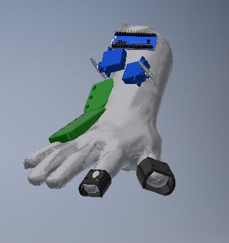
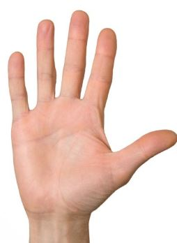
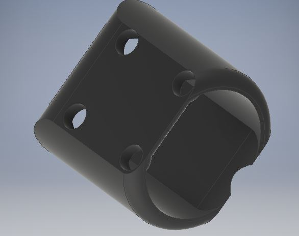
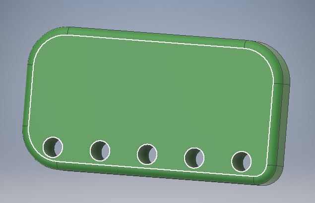
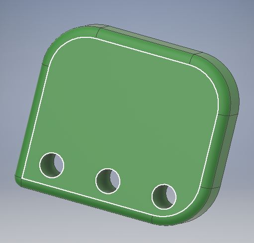
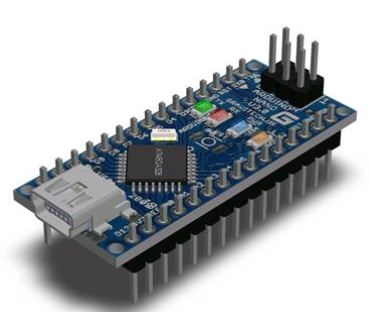
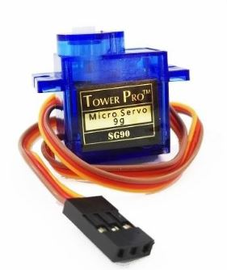

COMPONENTES
COMPLETO
IMAGEN: Primer prototipo del mecnismo interno
MANO ESTÁNDAR
IMAGEN:Imagen referencial de mano
DEDAL
IMAGEN:Parte de prototipo que sujetará los tubos de vinilo
PIEZAS1
IMAGEN: Parte referencial de la parte superior del extensor cubital.
PIEZAS2
IMAGEN:Parte referencial de la parte inferior del extensor cubital.
ARDUINO
IMAGEN:Arduino nano.
SERVOMOTOR
IMAGEN:Servomotor--responsable de la acción mecánica de la pinza
MÓDULO PRINCIPAL
Tanto el efecto pinza como la disminución del temblor en las manos del pacinete son temas que se deben resolver en este proyecto, ya que , ambas son complementarias. En este caso se optó por considerar el módulo principal el efecto pinza, puesto que este le servirá a nuestro cliente para desarrollarse con eficacia en su trabajo como contador (véase semana 4). Sin embargo, se propone un módulo de extensión cubital tan eficiente como el primero, el cual le otorgará al paciente la estabilidad necesaria en la mano para poder controlar sus movimientos de esta misma; por ello, ambos mecanismos se construirán en paralelo.
REFERENCIAS
Creación original. Inventor 2017. Viviana Chacón C.